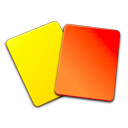

18'
Игрок команды Зенит Кокорин Александр, №9 получил желтую карточкуМаккаби
3
4
Зенит
Основные события матча:
24'
Гол команды Маккаби в исполнении Медуньянин Харис, №4 с голевой передачи Бен-Хаим II Таль, №1148'
Гол команды Маккаби в исполнении Кьяртассон Видар, №24 с голевой передачи Бен-Хаим II Таль, №1155'
Игрок команды Зенит Гарсия Хавьер, №21 получил желтую карточку59'
Игрок команды Зенит Витсель Аксель, №28 получил желтую карточку60'
Замена в команде Зенит, вместо игрока Кержаков Александр, №11 на поле выходит Джорджевич Лука, №7770'
Гол команды Маккаби в исполнении Медуньянин Харис, №473'
Замена в команде Зенит, вместо игрока Гарсия Хавьер, №21 на поле выходит Маурисио, №874'
Замена в команде Маккаби, вместо игрока Кьяртассон Видар, №24 на поле выходит Бен-Басат Эден, №976'
Гол команды Зенит в исполнении Кокорин Александр, №9 с голевой передачи Жулиано, №778'
Игрок команды Маккаби Райкович Предраг, №95 получил желтую карточку81'
Игрок команды Маккаби Даса Эли, №2 получил желтую карточку83'
Игрок команды Маккаби Мича Дор, №15 получил желтую карточку84'
Гол команды Зенит в исполнении Маурисио, №8 с голевой передачи Жулиано, №785'
Замена в команде Маккаби, вместо игрока Бен-Хаим II Таль, №11 на поле выходит Перец Дор, №4286'
Игрок команды Маккаби Медуньянин Харис, №4 получил желтую карточку91'
Гол команды Зенит в исполнении Джорджевич Лука, №77 с голевой передачи Жулиано, №793'
Замена в команде Зенит, вместо игрока Жирков Юрий, №81 на поле выходит Новосельцев Иван, №3Основные игроки команд
Маккаби
Райкович Предраг
Номер: 95
Время в игре: 96
Желтые карточки: 1
Бен Харуш Омри
Номер: 20
Время в игре: 96
Филипенко Егор
Номер: 21
Время в игре: 96
Бен-Хаим Таль
Номер: 26
Время в игре: 96
Даса Эли
Номер: 2
Время в игре: 82
Желтые карточки: 2
Игьебор Носа
Номер: 40
Время в игре: 96
Альберман Гал
Номер: 6
Время в игре: 96
Медуньянин Харис
Номер: 4
Время в игре: 96
Желтые карточки: 1
Голы: 2
Бен-Хаим II Таль
Номер: 11
Время в игре: 85
Голевые передачи: 2
Бенаюн Йосси
Номер: 51
Время в игре: 81
Кьяртассон Видар
Номер: 24
Время в игре: 74
Голы: 1
Зенит
Лодыгин Юрий
Номер: 1
Время в игре: 96
Кришито Доменико
Номер: 4
Время в игре: 96
Гарсия Хавьер
Номер: 21
Время в игре: 73
Желтые карточки: 1
Нету
Номер: 13
Время в игре: 96
Смольников Игорь
Номер: 19
Время в игре: 96
Жирков Юрий
Номер: 81
Время в игре: 93
Жулиано
Номер: 7
Время в игре: 96
Голы: 1
Голевые передачи: 3
Витсель Аксель
Номер: 28
Время в игре: 96
Желтые карточки: 1
Кокорин Александр
Номер: 9
Время в игре: 96
Желтые карточки: 1
Голы: 1
Кержаков Александр
Номер: 11
Время в игре: 60
Мак Роберт
Номер: 29
Время в игре: 96
Голевые передачи: 1
Игроки, вышедшие на замену
Маккаби
Перец Дор
Номер: 42
Время в игре: 11
Мича Дор
Номер: 15
Время в игре: 15
Желтые карточки: 1
Бен-Басат Эден
Номер: 9
Время в игре: 22
Зенит
Маурисио
Номер: 8
Время в игре: 23
Голы: 1
Новосельцев Иван
Номер: 3
Время в игре: 3
Джорджевич Лука
Номер: 77
Время в игре: 36
Голы: 1
Запасные игроки
Маккаби
Лифшитц Даниэль, №1
Скарионе Эсекьель, №5
Голаса Эйял, №23
Ицхаки Барак, №10
Зенит
Кержаков Михаил, №41
Ломбертс Николас, №6
Юсупов Артур, №14
Гасилин Алексей, №48
Рады приветствовать любителей футбола на матче группового этапа Лиги Европы между командами "Маккаби" Тель-Авив и "Зенит" Санкт-Петербург. Разного уровня соперники встретятся в предстоящем поединке, однако более квалифицированным гостям придется приложить немало усилий, чтобы добиться максимального результата. Последними результатами в чемпионате команда Луческу порадовала, получится ли продолжить и на европейском уровне? Сайт http://www.soccer.ru проведёт прямую текстовую онлайн трансляцию матча, следить за событиями на поле и комментировать игру для вас будет Старчеус Сергей.
0'
"Маккаби" Тель-Авив, заняв в местном чемпионате 2-е место, вынужден был пройти весь путь от первого раунда квалификации до группового турнира, и лёгким он не был, несмотря на то, что первое поражение команда потерпела лишь в стадии плей-офф в выездной встрече с "Хайдуком" 1:2. В чемпионате Израиля, который не так давно стартовал, "Маккаби" сыграл три поединка - разница мячей в них составила 7:4, забивала и пропускала команда в каждом из них. В предстоящем поединке на поле не выйдет Эйтан Тиби.
0'
"Зенит", оказавшийся по итогам прошлого сезона на 3-й позиции в российской Премьер-лиге, получил возможность начать свой путь на международной арене с группового турнира Лиги Европы. Команда непросто втягивалась в сезон. Новому тренерскому штабу во главе с Мирчей Луческу понадобилось время для того чтобы футболисты обрели нужные кондиции. Поначалу яркой игры не получилось по ряду объективных причин - здесь и смена тренера, и уезд Халка, а также травмы Данни и Дзюбы. Но в последних играх все вроде стало на свои места, "Амкар" и "Арсенал" получили восемь голов на двоих, отлично в команду влился Жулиано, выздоровел Дзюба. Наставник сине-бело-голубых решил не рисковать здоровьем Дзюбы и Шатова, оставив их дома. Продолжает лечение Данни.
0'
"Зенит", выступавший в последние годы в Лиге чемпионов, является фаворитом группы. "Маккаби" Тель-Авив по подбору исполнителей не может сравниться со своим соперникам, и шансов на успех даже в родных стенах у жёлтых дьяволов немного. Классом россияне однозначно выше, да и оборона "Маккаби" видится слишком уж уступчивой, пропуская большое количество мячей даже в слабом по составу местном чемпионате. Сегодня вполне можно рассчитывать на довольно интересный поединок.
0'
Первый тайм матча начался! С центра поля разыграли футболисты "Зенита".
1'
Хозяева будут играть в жёлтой форме, футболисты "Зенита" вышли на игру в сине-голубой амуниции.
2'
Гости вышли в атаку, но поспешил Роберт Мак, лайнсмен поднимает флажок, офсайд.
3'
Бен Харуш пробил по воротам с угла штрафной, его удар был заблокирован, угловой подадут хозяева.
4'
После подачи с углового ничего опасного у ворот Юрия Лодыгина создать не удалось.
5'
"Маккаби" владеет мячом в центре поля, но перейти на чужую половину не удаётся, внимательно в обороне играет "Зенит".
6'
Сбивают Александра Кержакова на половине поля "Маккаби", судья назначает штрафной и обходится без карточки.
7'
Жулиано навешивал в штрафную площадь, здорово выпрыгнул Витсель и пробил головой по воротам, вратарь на месте.
8'
Жулиано не понял Кержакова, помешали друг другу зенитовцы и не смогли пробить по воротам соперника.
9'
"Зенит" уверенно контролирует ситуацию на поле, хорошо ходит мяч у сине-бело-голубых.
10'
Практически всем составом клуб из Петербурга на половине поля "Маккаби".
11'
Витсель пробил низом по центру ворот из-за пределов штрафной, мяч был лёгким для вратаря.
12'
В центре поля нарушают правила гости, "Маккаби" разыграет мяч.
13'
Опасно у ворот "Зенита"! Бен-Хаим II пробивал низом в дальний угол ворот, Лодыгин не дотянулся до мяча и тот ударившись о штрангу вылетел в поле!
Команда: Маккаби
14'
Пытаются организовать свою атаку зенитовцы, растягиваются по всей ширине поля.
15'
Кришито блестяще забирает мяч у соперника в подкате и начинает атаку своей команды.
16'
Здорово ворвался в чужую штрафную Смольников, последовала на него передача, но Игорь до мяча не дотянулся, отбились хозяева.
17'

Непонятно зачем в центре поля Кокорин играл в грубом подкате, но тем не менее этот фол на жёлтую карточку.
Команда: Зенит
Игрок: 9
18'
Свивают Хави Гарсия в центре поля, лежит игрок на газоне, судья назначает штрафной.
19'
Очень медленно играют команды, практически стоят в центре поля, Витсель начинает движения вперёд.
20'
Очередной офсайд, в этот раз попался Юрий Жирков, хорошо выдерживают линию хозяева.
21'
"Зенит" пытается вскрыть оборону соперника то справа, то слева, но пока не удаётся.
22'
Здорово Бен-Хаим подставил корпус и не пустил к мячу Юрия Жиркова, мяч вышел за линию поля, от ворот.
23'

ГОООООООЛ! Медуньяин Харис открывает счёт в матче! 1:0!
Команда: Маккаби
Игрок: 4
Передача: 11
24'
Грубейшая ошибка "Зенита" привела к пропущенному мячу! При большом территориальном преимуществе гости пропускают первыми в матче. 1:0!
Команда: Маккаби
25'
Понеслись гости сразу в атаку, комбинируют у чужой штрафной, но теряют мяч.
26'
Кержаков пробивал по чужим воротам из-за линии штрафной площади, вратарь ловит мяч.
27'
Пытаются создать опасный момент игроки "Зенита", но на подступах к штрафной теряют мяч.
28'
"Маккаби" контролирует мяч на своей половине поля и не спешит с ним расставаться, отыгрывают назад, на вратаря.
29'
Пол часа в матче сыграно, "Маккаби" забил не вытекающий из логики гол и ведёт в счёте.
30'
Мак прорывался в атаку, но был сбит соперником в середине поля, фол назначает арбитр.
31'
Гости привычно контролируют мяч на чужой половине поля, но впереди всё перекрыто.
32'
Футболисты "Зенита" обращают внимание судьи на то, что мяч попал в руку защитнику "Маккаби", но судья оставил этот момент без внимания.
33'
Угловой подавали гости, но нанести удар по воротам не вышло, от ворот выбьет Райкович.
34'
Медуньяин подобрал подбор около штрафной "Зенита" и в касание пробил мощно по воротам Лодыгина, мяч пролетает рядом со штангой.
Команда: Маккаби
35'
Жулиано отдавал вперёд на ход Кокорину, но Александр на этот мяч не пошёл.
36'
Плотно играют в обороне хозяева и при первой возможности сразу идут вперёд.
37'
Серия потерь пошла в центре поля у обеих команд, надо отметить, что большие скорости демонстрируют и те, и другие.
38'
Кришито хорошо отрабатывает в защите и не даёт сопернику добраться до мяча.
39'
Хороший отрезок матча проводят футболисты "Маккаби", умело контролируют мяч.
40'
Мирча Луческу весь первый тайм на ногах, ему явно не нравится как проходит первый тайм.
41'
Кришито решил взять игру на себя, пошёл вперёд и сделал навес в штрафную, чуть чуть не достал мяч Кержаков Александр.
42'
Юрий Жирков нарушает правила в центре поля ведя борьбу за мяч с соперником, арбитр был рядом и разглядел нарушение правил.
43'
Нарушают гости правила около своей штрафной, "Маккаби" пробьёт опасный штрафной.
44'
Опасно пробивает Медуньяин со штрафного в ближний угол, мяч проходит мимо штанги в считанных сантиметрах!
Команда: Маккаби
45'
На этом первый тайм матча завершён, уходим на перерыв!
46'
Второй тайм матча начался! Без замен обошлись наставники обоих команд в перерыве матча.
46'
Александр Кокорин пробивал по воротам находясь за пределами штрафной, защитник заблокировал удар.
47'
ГОООООООЛ! Кьяртассон Видар забивает второй гол в ворота "Зенита"! 2:0!
Команда: Маккаби
Игрок: 24
Передача: 11
48'
Сходит с ума от счастья стадион, "Маккаби" повёл в счёте со счётом 2:0! Таль Бен-Хаим навесил с правого фланга в штрафную, Кьяртанссон нанёс удар головой по воротам и не сумел достать мяч Лодыгин!
Команда: Маккаби
49'
Судейская бригада арбитров разглядела офсайд, забежал за линию защитников Александр Кержаков.
50'
Левым флангом гости мчали в атаку, оборона выбивает мяч в аут, "Зенит" продолжает атаковать.
51'
Нету пробил по воротам издали, мяч пролетел над перекладиной и улетел на трибуну.
52'
Хозяева вышли в атаку и заработали угловой на левом фланге.
53'
Решили разыграть хозяева мяч с угла поля, но гости вытеснили соперника подальше от штрафной.
54'
Выпускает пар Хави Гарсия, спорит с арбитрам и получает жёлтую карточку.
Команда: Зенит
Игрок: 21
55'
Кокорин вошёл в штрафную, и находясь в выгодной позиции не стал бить а начал обыгрывать вратаря и потерял мяч...
Команда: Зенит
56'
Аксель Витсель выстрелил в сторону ворот "Маккаби", удар получился мощным, но неточным.
57'
Бенаюн высоко прессингует Игоря Смольникова, защитнику гостей приходится отыгрывать назад на Лодыгина.
58'
Грубо в подкате играет Аксель Витсель, жёлтая карточка.
Команда: Зенит
Игрок: 28
59'
Замена в составе "Зенита", вместо Кержакова Александра на поле выходит Лука Джорджевич.
Команда: Зенит
Заменяемый: 11
Заменяющий: 77
60'
Левым флангом атаковали гости, Лука Джорджевич вёл борьбу с защитником и упустил мяч за лицевую, от ворот.
61'
Вратарь хозяев начинает потягивать время, не спеша вводит мяч в игру, футболисты "Зенита" апеллируют к арбитру.
62'
Нету забрасывает вперёд на Мака, не прошла передача, защитник первый на мяче.
63'
Кокорин попробовал один в один обыграть защитника, но не смог и потерял мяч.
64'
Доминируют на поле гости, но до опасного момента дело не доходит, не могут пробить по воротам зенитовцы.
65'
Жулиано пошёл на двоих соперников и потерял мяч, "Маккаби" выходят в контратаку.
66'
Смольников отдал вперёд на Джорджевича, но Лука жёстко обрабатывал мяч и далеко отпустил его.
67'
Без центра поля играют команды, гости всем составом кроме вратаря на чужой половине поля.
68'
Штрафной зарабатывает "Маккаби" на углу штрафной площади, Кокорин был не прав в эпизоде.
69'
ГОООООООЛ! Харис Медуньяин забивает третий мяч в ворота "Зенита"! 3:0!
Команда: Маккаби
Игрок: 4
Передача:
70'
Безупречно выполнен удар со штрафного в исполнении Медуньянина, мяч обогнув стенку влетел в самую "паутину" ворот Лодыгина! 3:0!
Команда: Маккаби
71'
Невероятно, кто бы мог подумать что так безвольно отдаст игру питерский "Зенит", речь уже идёт о престиже клуба.
72'
Вторая замена в составе гостей, вместо Хави Гарсия играть будет Маурисио.
Команда: Зенит
Заменяемый: 21
Заменяющий: 8
73'
Замена у "Маккаби", уходит с поля Кьяртассон, вместо него играть будет Эден Бен-Басат.
Команда: Маккаби
Заменяемый: 24
Заменяющий: 9
74'
Ничего не выходит у сине-бело-голубых в атаке, всё читается и перехватывается обороной.
75'
ГОООООООЛ! Александр Кокорин отыгрывает один мяч, 3:1!
Команда: Зенит
Игрок: 9
Передача: 7
76'
Жулиано сделал заброс на дальнюю штангу, там совсем один находился Кокорин, который в пустые ворота внёс мяч и сократил отставание в счёте, 3:1!
Команда: Зенит
77'
За споры с арбитром жёлтую карточку получает Райкович.
Команда: Маккаби
Игрок: 95
78'
Момент был у "Зенита", но Джорджевич не сумел замкнуть передачу на дальней штанге, мяч от его ноги полетел выше ворот.
79'
Пошли последние десять минут матча, сумеет ли "Зенит" сделать камбэк?
80'
Замена в составе "Маккаби", вместо Бенаюна на поле вышел Мича Дор.
Команда: Маккаби
Заменяемый: 51
Заменяющий: 15
81'
Эли Даса получает жёлтую карточку, грубо было сыграно.
Команда: Маккаби
Игрок: 2
81'
Спустя минуту нарушает правила Даса и получает вторую жёлтую карточку, это удаление! "Маккаби" остаётся вдесятером!
Команда: Маккаби
Игрок: 2
82'
Опасный свободный будет пробивать "Зенит"! До ворот 7-мь метров!
Команда: Зенит
83'
Страсти кипят на поле, судья достаёт жёлтую карточку, предупреждён Дор Мича.
Команда: Маккаби
Игрок: 15
83'
ГОООООООЛ! Маурисио сокращает счёт в матче! 3:2!
Команда: Зенит
Игрок: 8
Передача: 7
84'
Интрига в матче возвращается! Настоящий камбэк в исполнении питерского "Зенита"! Маурисио забивает второй мяч в ворота "Маккаби" после розыгрыша свободного.
Команда: Зенит
85'
Последняя замена в матче, уходит Бен-Хаим Таль II.
Команда: Маккаби
Заменяемый: 11
Заменяющий: 42
85'
ГОООООООЛ! Жулиано сравнивает счёт в матче! 3:3!
Команда: Зенит
Игрок: 7
Передача: 29
86'
Ещё у одного игрока не выдержали нервы, судья показывает "горчичник" Медуньянину.
Команда: Маккаби
Игрок: 4
86'
Невероятно! "Зенит" сумел вернуться в игру проигрывая 0:3! Жулиано был расторопнее всех в чужой штрафной и поразил пустые ворота Райковича! 3:3!
Команда: Зенит
87'
Пошли дожимать соперника сине-бело-голубые, футболисты "Маккаби" мечтают об окончании матча, совсем не осталось сил обороняться.
Команда: Зенит
88'
6 минут добавляет главный арбитр встречи к основному времени матча!
89'
Матч получился эмоциональным как для тех, так и для других, сил практически не осталось.
90'
ГОООООООЛ! Лука Джорджевич забивает ещё один гол и выводит "Зенит" вперёд! 3:4!
Команда: Зенит
Игрок: 77
Передача: 7
91'
С фланга подал Жулиано в штрафную площадь, там Лука Джорджевич в падении головой замкнул подачу отправив мяч в ворота "Маккаби", 3:4!
Команда: Зенит
92'
Тактическая замена от Мирчи Луческу, вместо Жиркова на поле вышел Новосельцев.
Команда: Зенит
Заменяемый: 81
Заменяющий: 3
93'
Джорджевич загубил момент, мог отдать на свободного партнёра, но решил доиграть эпизод до конца и не смог переиграть вратаря!
Команда: Зенит
94'
Не спеша разыгрывает угловой "Зенит", футболисты в синих майках держат мяч у самого угла поля.
95'
Финальный свисток даёт судья, матч завершён!
96'
Чудеса всё-таки бывают, именно так можно охарактеризовать матч который выдали "Маккаби2 Тель-Авив и "Зенит" из Санкт-Петербурга. Проигрывая в три мяча команда Луческу собралась и менее чем за 20-ть минут смогла не только сравнять счёт, но и выйти вперёд, победив в драматической встрече со счётом 3:4! Хозяева показали хорошую игру при игре на контратаках, но на весь матч их не хватило. "Зенит" добывает тяжелеёшую победу в Израиле и зарабатывает свои первые три очка в группе.
97'